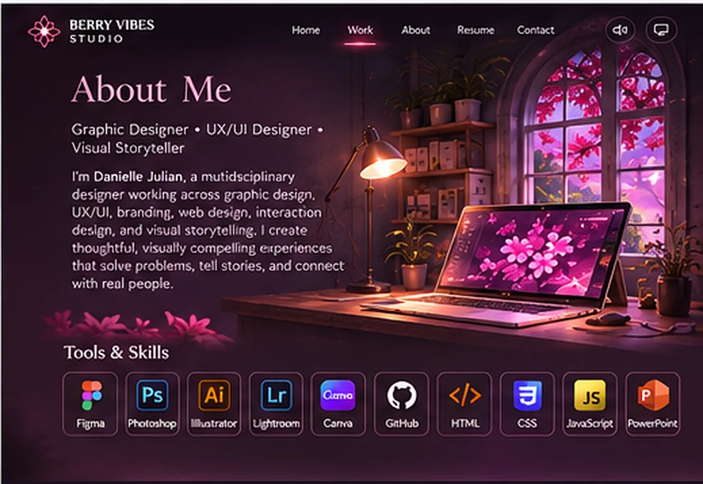
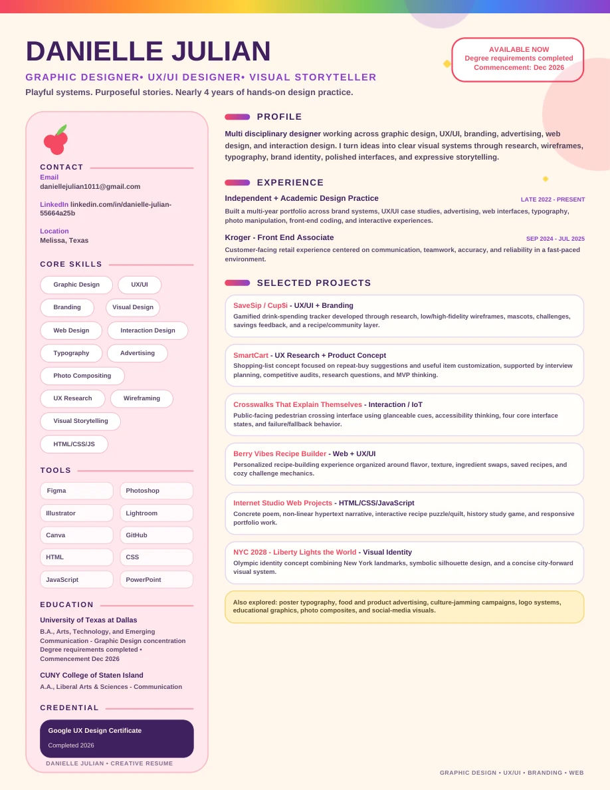

THE
CREATIVE
DIMENSION
A Portfolio by Danielle Julian
Graphic Designer • UX/UI Designer •
Visual Storyteller
Playful systems. Purposeful stories.
Nearly 4 years of hands-on practice.
The exhibition
Explore the Work
Project Overview
- My role
- Focus
- Outcome
Key Deliverables
Multidisciplinary by practice
About Me
Graphic Designer • UX/UI Designer •
Visual Storyteller
I’m Danielle Julian, a multidisciplinary designer working across graphic design, UX/UI, branding, web design, interaction design and visual storytelling. I turn ideas into clear visual systems through research, wireframes, typography, brand identity, polished interfaces and expressive imagery.
I discovered graphic design around 2021 and began practicing consistently in late 2022. My independent and academic practice now spans brand systems, product concepts, responsive websites, front-end coding and research-driven design.
Formal commencement December 2026

Purposeful stories.
Tools & Skills
Core Focus
Education & Credentials
University of Texas at Dallas
B.A., Arts, Technology, and Emerging Communication — Graphic Design concentration
Degree requirements completed · Commencement Dec 2026
CUNY College of Staten Island
A.A., Liberal Arts & Sciences — Communication
Google UX Design Certificate
Completed 2026
Background & practice
Resume
My background, experience, education and skills at a glance.
View Resume (PDF)Download Resume
Start a conversation
Contact
Let’s connect! I’m open to design opportunities, collaborations and creative projects.
daniellejulian1011@gmail.comlinkedin.com/in/danielle-julian-55664a25bMelissa, Texas
Write an Email